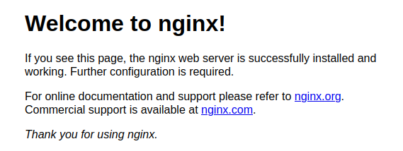
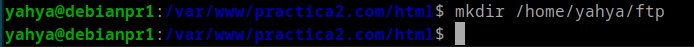

Practica 2
Pasos para instalar y configurar Nginx en Debian 12.
Instalación servidor web Nginx
Instalamos Nginx

Verificamos La instalacion:

Creacion de la carpeta de la web
Creacion de la carpeta de la web en /var/www/
Inicializar el repositorio git, y clonar el repo https://github.com/cloudacademy/statis-website-example

Dar permisos al usuario yahya

Comprobacion del funcionamiento de Nginx 
Configuración de servidor web NGINX
Abrimos el fichero de configuracion /etc/nginx/sites-available/vuestro_dominio

Configurarlo
Crear el archivo simbolico al sites-enabled

Reiniciar el servidor

Modificar el archivo C:\Windows\System32\drivers\etc\hosts poniendole la ip del servidor


FTP
El FTP es un protocolo de transferencia de archivos entre sistemas conectados a una red TCP. Como su nombre indica, se trata de un protocolo que permite transferir archivos directamente de un dispositivo a otro.
Configuracion SFTP en Debian
Instalamos vsftpd
Creamos una carpeta ftp en /home/yahya 
Creamos los certitificados de seguridad de la conexion